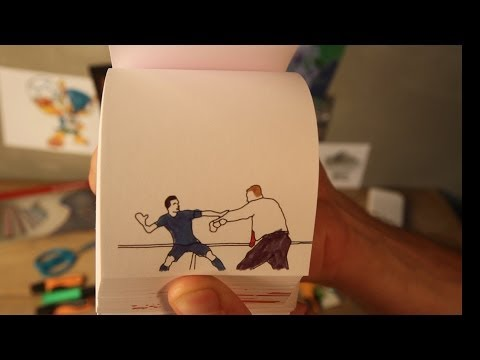
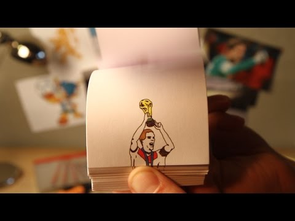

案例发生了什么


范佩西对西班牙打入鱼跃冲顶后，STABILO 团队在 24 小时内用纸笔逐帧重画进球、制作翻页动画，并配上比赛原声快速发布。
赛前准备固定片头片尾与制作团队；赛中选择最具传播性的真实瞬间；终场后四名艺术家分工绘制、装订与拍摄；24 小时内上线并由体育媒体与社交平台扩散。
MARKETING KNOWLEDGE ROUTER · 营销知识路由器
营销启发卡
把历届经典的记忆点、商业结构和迁移方法放在同一层阅读。 卡片底部按主题连接全站相关案例、经典方法与深度文章。
核心动作
神奇进球的即时兴奋、手工重现的惊喜，以及球迷想反复观看高光的需求；范佩西像“飞翔的荷兰人”一样在一本手绘翻页书里掠过卡西利亚斯。
传播与商业机制
品牌卖的是笔，创作过程本身就是产品证明；不需要球星代言或赛事 Logo，纸张上的每一帧都在展示工具能做什么；赛前准备固定片头片尾与制作团队；赛中选择最具传播性的真实瞬间；终场后四名艺术家分工绘制、装订与拍摄；24 小时内上线并由体育媒体与社交平台扩散。
可复用的方法
实时营销不等于十分钟出海报；提前搭好生产系统，在 24 小时内交付一件真正有手艺、有产品关系的内容，价值远高于抢首发。
适用条件、风险与证据
- 必须提前准备流程和团队，且只选少数真正值得被艺术化的瞬间；若每场都做，会稀释稀缺性并拖垮质量。
- 必须提前准备流程和团队，且只选少数真正值得被艺术化的瞬间；若每场都做，会稀释稀缺性并拖垮质量。 后续复盘还应补齐发布主体、时间线、真实执行图、媒介范围和结果口径；没有这些证据时，不把行业评价或赛事总热度写成品牌增量。
资料与来源
官方资料与原始来源
市场 / 权益
荷兰 / 全球社交平台
非官方实时借势
创意打法
实时内容型；手工媒介型；产品即工具型
- Marc de Wolf / Yune · 2014STABILO World Cup Animations 项目页
- TIME · 2014-06-16Relive Robin van Persie’s World Cup Header Through a Flipbook
- Marketingfacts · 2014-06-23STABILO Flipbook Goal 制作与传播访谈
来源按品牌/官方发布、官方账号留存、权威媒体、获奖案例库分层记录；品牌与奖项自报结果不视作独立审计。